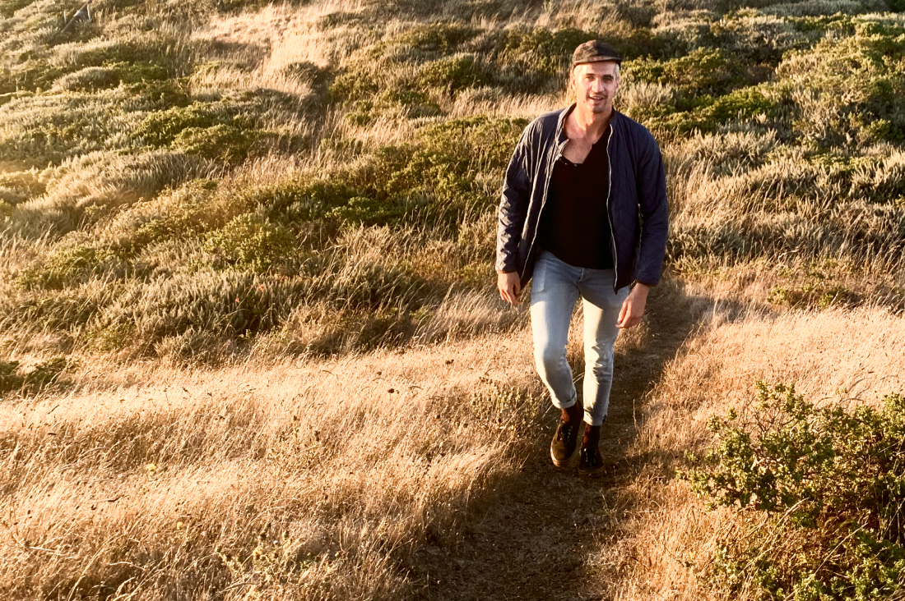

BIO
I'm a driven, gentle, and empathetic Midwesterner based in San Francisco's Richmond District. I create digital products, brand collateral, brand identities, websites and everything in-between.
I've been designing professionally since 2019, after several years in content writing & marketing. I currently freelance for both established brands and small businesses looking to define their visual identity.
SKILLS
Visual Design in Photoshop, Illustrator, InDesign & After Effects
Prototyping in Sketch, Figma & Adobe XD
Digital Illustration
Copywriting
Content Marketing & Content Strategy
Front-end Development
Project Management


PHILOSOPHY & OFFERING
I believe that good design should ultimately make our lives easier and more delightful.
Paramount to that mission is making information as accessible and easy to understand as possible. I'm in a unique position to make that happen: With my design and content writing experience, I flex between interface and content design as I craft human-centered experiences and products.